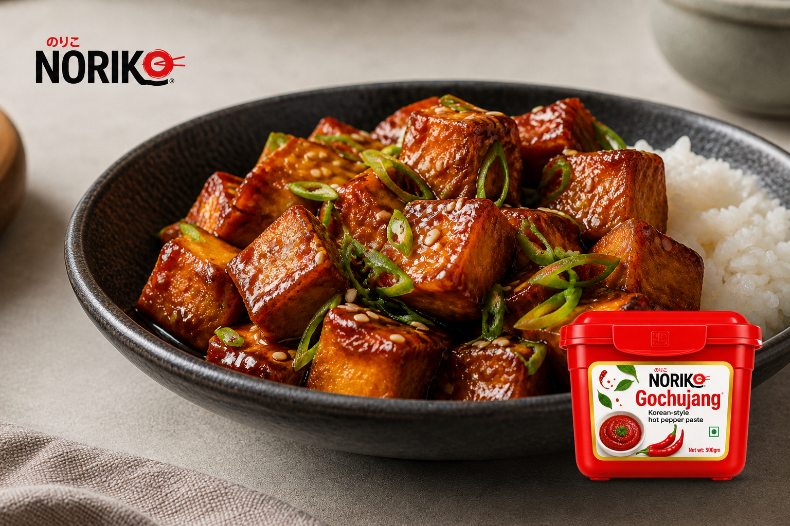

Recipe · Vegetarian
Gochujang Honey Paneer
Crisp golden paneer tossed in a sticky glaze that balances savoury gochujang, honey, garlic and sesame.
Prep 15 minCook 20 minServes 4Easy
Start cooking
Method
- Coat the paneer.Pat the paneer dry. Toss gently with cornflour and salt until every cube is lightly coated.
- Mix the glaze.Whisk gochujang, honey, rice vinegar, soy sauce, sesame oil, garlic and water until smooth.
- Brown the paneer.Heat the neutral oil in a wide non-stick pan over medium-high heat. Cook paneer for 6–8 minutes, turning until golden on several sides. Transfer to a plate.
- Reduce the sauce.Lower the heat to medium. Pour the glaze into the same pan and simmer for 60–90 seconds, stirring, until glossy and slightly thickened.
- Finish and serve.Return the paneer to the pan and toss for 1–2 minutes until evenly coated. Finish with sesame and spring onion. Serve immediately with steamed rice.
Chef's note: Add 1–2 tbsp water if the glaze tightens before the paneer is fully coated.
NORIKO used here